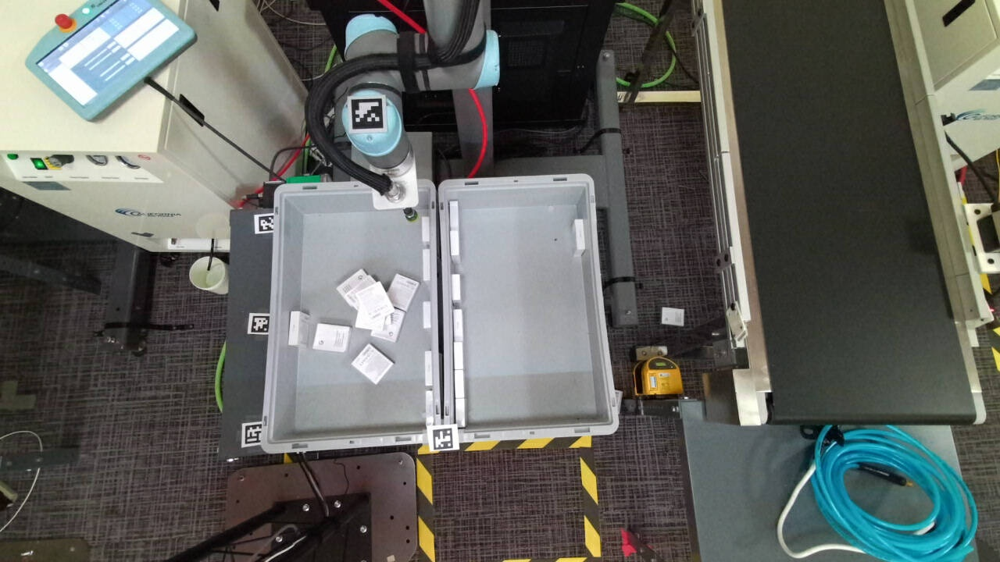
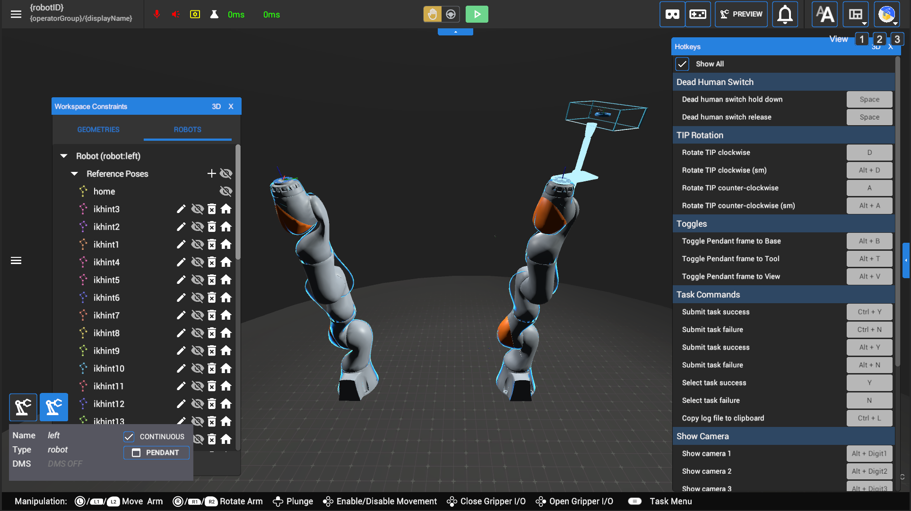

Google Robotics UI
Internal tool used at Google for robotics teleoperation and AI research

Overview
The Robotics UI was a program used internally at Google for robotics teleoperation and 3D visualization that also evolved as an AI research and data collection tool. It was built in Unity and had web and desktop versions that allowed users to connect to multiple kinds of robots hooked up to it across several Google buildings. I would help to enable new types of robots to the program and adapt the UI to accommodate for the new features they brought. The bulk of my work however involved fixing, polishing, and updating the many features of the UI that had been stuffed into the project over the years and making large-scale reorganizations of the UI as a whole.


Improving the UI/UX
The Robotics UI was a long-running and frequently repurposed venture with numerous engineers rotating in and out, often with minor Unity experience. This resulted in a ton of partially implemented and outdated features shoved in wherever they could be fit without a lot of thought to the larger UI as a whole. My most frequent contributions to the project were updating or finishing out these features and making large-scale reorganizations of the UI to make the entire experience more cohesive, intuitive, and usable.
Initial UI state

Later redesign stage

The above gif of course does not showcase many of the the more advanced and busy features of the UI, nor is it the final version of the final UI redesign. It exhibits a part-ways steps in my larger redesign that I unfortunately didn't record competent media of. The base design here is fairly close to the final version however, and hopefully it exhibits some level of a more tightly designed UI in comparison.
Teleoperation
What was the result? Shipped? Won an award? Learned something key? Show the impact of your work here.

What was the result? Shipped? Won an award? Learned something key? Show the impact of your work here.

Multi-robot UI
What was the result? Shipped? Won an award? Learned something key? Show the impact of your work here.



Part of the work involved adding new robots to use through the UI. Prior to my starting there, there had only been single-arm robots connected through this UI. I would help set up the first bi-arm robot to the UI which involved updating the project wefawefawefawefwa Adjusting the UI to different robots. sdfsd sd
Protobuf RUI
What was the result? Shipped? Won an award? Learned something key? Show the impact of your work here.

Outcome
What was the result? Shipped? Won an award? Learned something key? Show the impact of your work here.